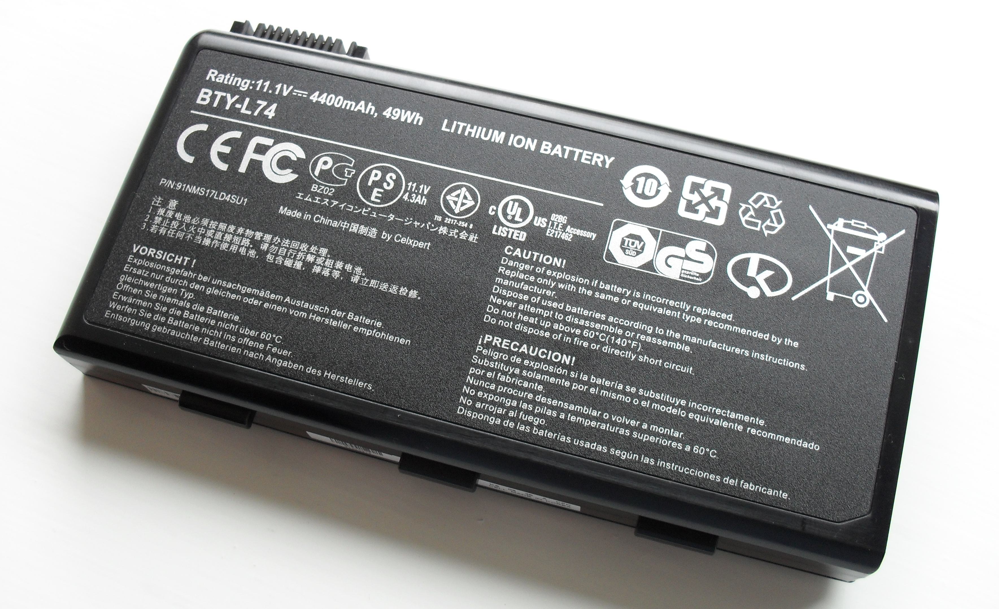

Use case: Cabin
Off-grid cabin solar system cost breakdown
Cabin solar costs are driven by two decisions: how much energy you need each day, and how many “no-sun” hours or days you want the battery to cover. This guide breaks costs into practical categories so you can budget realistically.
What drives cabin solar cost the most
- Battery size: larger autonomy and higher daily use increase cost quickly.
- Inverter size: big AC loads require heavier wiring and protection parts.
- Installation complexity: long cable runs, outbuildings, or difficult mounting add cost.
Typical cabin solar budget tiers (high-level)
| Tier | Typical range | Best for |
|---|---|---|
| Starter | $1,000–$3,000 | Lights, device charging, occasional small inverter use |
| Mid-range | $3,000–$9,000 | Regular off-grid use with fridge and moderate inverter loads |
| High-capacity | $9,000–$20,000+ | Higher daily use, bigger autonomy, heavier AC loads |
Cost breakdown by component category
| Category | Typical range | Notes |
|---|---|---|
| Solar panels | $0.40–$1.20 per watt | Roof/ground mount affects price |
| Batteries | $200–$900 per kWh | Compare usable kWh + cycle life |
| Charge controller | $120–$900 | MPPT often chosen for off-grid efficiency |
| Inverter | $300–$2,500+ | Sized to peak + surge needs |
| Wiring & protection | $200–$1,500 | Fuses/breakers, combiner, bus bars, disconnects |
| Mounting hardware | $150–$1,500+ | Ground mount and snow load can raise costs |

{kind=link}
Why “size first, buy second” saves money
The most expensive mistakes happen when parts are chosen before you know your daily energy use and peak load. A larger inverter can force heavier wiring, bigger fusing, and more battery capacity—so one “upgrade” can multiply costs.
DIY vs professional installation
DIY builds can lower upfront cost but add time, tools, and responsibility for permitting and inspections. Professional installs often include design support and warranty coverage.
If you are unsure about wiring or code requirements, hiring a licensed electrician for final connections is often a good compromise.
Site and access costs
Remote cabins can add shipping, travel, and installation complexity. Ground mounts may require trenching and concrete, while roof mounts can require specialized hardware.
Plan for access needs early so you do not pay twice for freight or on-site adjustments.
Long-term replacement costs
Batteries and inverters are the most common long-term replacements in off-grid systems. Factor in eventual battery replacement when comparing upfront options.
Panels typically last longer, but mounting hardware and wiring may need inspection or replacement over time.
Budgeting for winter and seasonal use
If you rely on the cabin in winter, you may need extra panels, more battery capacity, or a backup generator. Those choices can raise the total budget.
If the cabin is mostly a summer destination, you can often size smaller and reduce cost.
Example budget worksheet (planning only)
Start with daily energy use and autonomy, then assign rough ranges to each category. A simple worksheet helps prevent under-budgeting wiring and protection.
- Panels: watts needed × estimated $/W.
- Batteries: usable kWh × $/kWh for the chemistry.
- Inverter: sized to peak load and surge.
- Wiring and protection: add a realistic line item.
Ways to control cost without cutting safety
Focus on load reduction first. LED lighting, efficient refrigeration, and realistic appliance use can reduce system size and total cost.
Plan a system you can expand later, but avoid undersizing core components like wiring and protection.
Generator backup costs
Many cabin owners add a small generator for winter or storm backup. This can reduce the solar system size, but adds fuel and maintenance costs.
If you add a generator, include a charger, transfer equipment, and safe fuel storage in the budget.
Fuel cans, stabilizer, and transfer switches can add more than you expect.
Example budget range (planning only)
A modest cabin system with a few hundred watts of panels and a small battery bank can fall in the low thousands. A full-time cabin with a fridge, tools, and winter resilience can push well above that.
Use your load estimate to pick the right tier rather than guessing.
Track local quotes so you can refine the range for your area.
Ongoing maintenance costs
Solar systems have low ongoing costs, but batteries may need replacement and inverters may require service over time.
Budgeting a small annual maintenance reserve helps avoid surprises.
Plan for battery replacement intervals in your long-term budget.
Battery warranties often end before the system does.
Include inverter fan cleaning and periodic torque checks as well.
Permitting and inspection costs
Some cabins require permits for electrical work, especially for grid-tied systems. Fees vary and can add to total cost.
Used equipment tradeoffs
Used panels can save money, but check wattage degradation, physical damage, and connector compatibility. For batteries and inverters, used gear is riskier because life is limited and warranties may not transfer.
If you buy used, keep extra budget for early replacement and prioritize safety-critical components like wiring, breakers, and battery management.
Used panels are usually safer than used batteries when reliability matters.
Quick summary
Cabin solar cost rises quickly with battery size and inverter power. Start with your load list and size conservatively.
Where cabin solar systems typically overspend
1) Oversized inverter
“Just in case” sizing increases wiring, protection, and battery stress. Match inverter size to realistic peak loads.
2) Underbudgeted wiring and protection
Disconnects, breakers, fuses, bus bars, and quality cable are not optional in a safe off-grid system.
3) Battery mismatch
Comparing batteries by nameplate kWh only can lead to poor value. Usable kWh and cycle life are the practical comparison points.
FAQ
How much does it cost to run a cabin on solar?
It depends on daily Wh, autonomy, and inverter loads. Batteries and balance-of-system parts often dominate off-grid budgets.
Is cabin solar cheaper than a generator?
Upfront, solar is usually more expensive. Over time, generators add ongoing fuel and maintenance costs.
What’s the cheapest way to start?
Start with critical loads and a smaller inverter, then expand panels and battery as you learn your real usage.
Does winter use make systems more expensive?
Often yes, because you may need more panels, more battery, or a supplemental power plan during low-sun periods.
Should I budget for a backup generator?
If you rely on the cabin in winter or during storms, a backup generator can reduce the size and cost of the solar system.